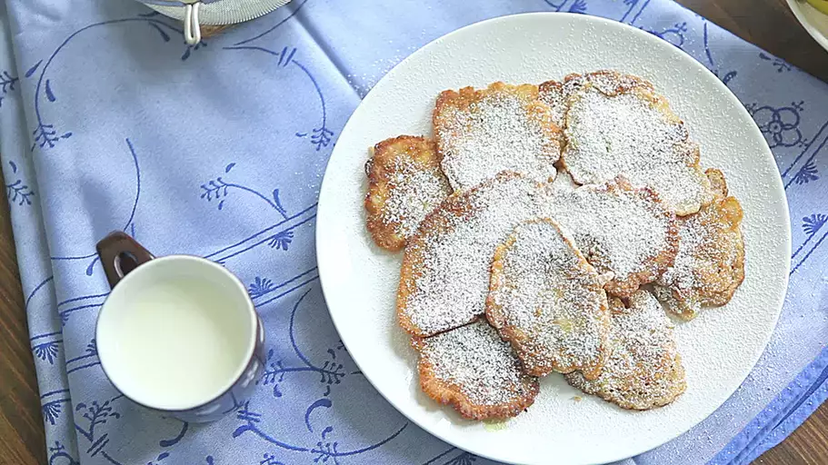

Racuchy z Jablkami (Polish Apple Pancakes)

Description
Racuchy are Polish pancakes that are super popular as a dessert in Poland, but I make them for breakfast here for my kids. Serve sprinkled with powdered sugar or topped with sour cream.
Ingredients
- 2 cups milk
- 2 cups all-purpose flour
- 2 eggs
- 1 tablespoon white sugar
- 1 teaspoon ground cinnamon
- ½ teaspoon baking soda
- 1 pinch salt
- 2 large apples - peeled, cored, and diced
- vegetable oil, or as needed, divided
- 2 tablespoons confectioners' sugar, or to taste
Directions
- Combine milk, flour, eggs, sugar, cinnamon, baking soda, and salt in a large bowl; beat with an electric mixer until smooth and creamy. Mix in apples.
- Heat 1 tablespoon oil in a skillet over medium-high heat.
- Drop batter by large spoonfuls into the pan and cook until the edges are dry and the bottom is browned, 3 to 4 minutes. Flip and cook until browned on the other side, 2 to 3 minutes. Repeat with remaining batter.
- Dust pancakes with confectioners' sugar.